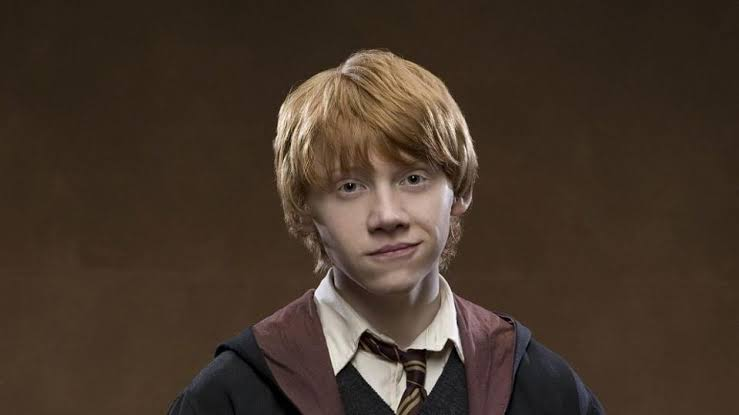
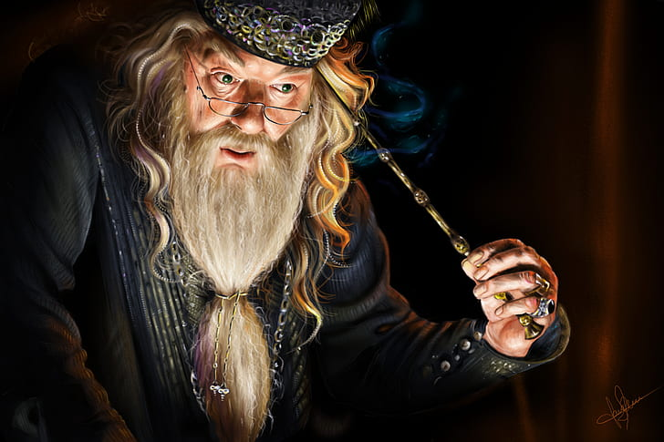
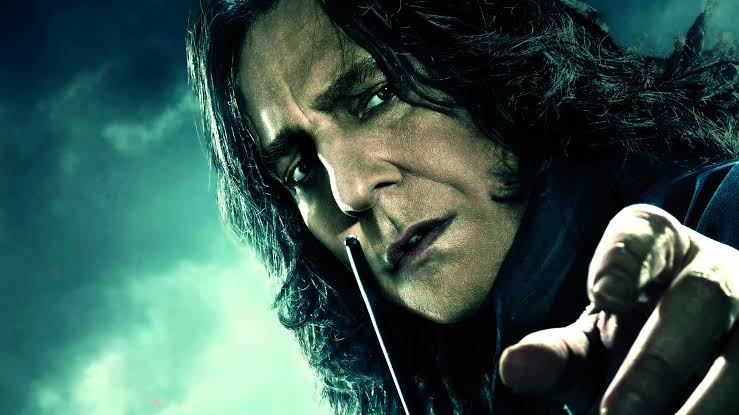
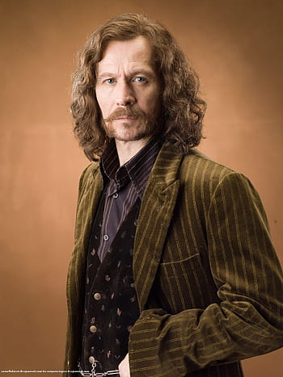
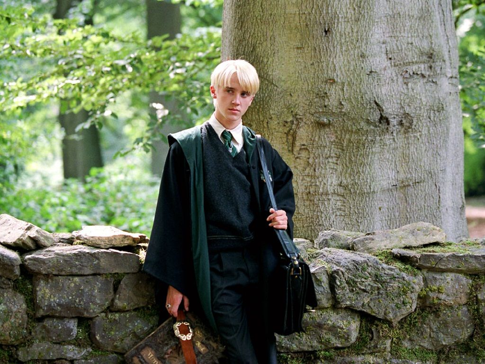
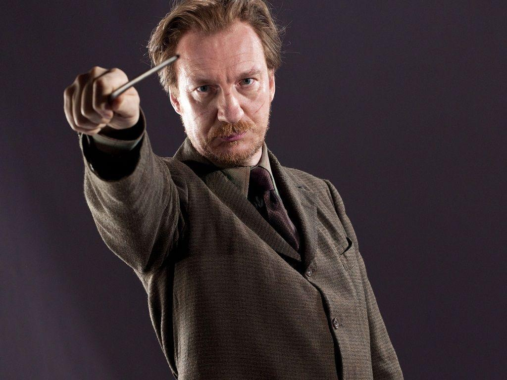
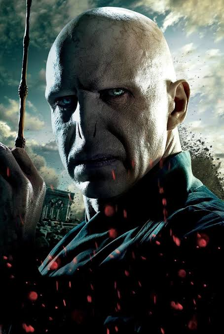

| Character | Image | Brief | Movies Name |
|---|---|---|---|
| Harry Potter |  |
Harry James Potter is a fictional character and the titular protagonist in J. K. Rowling's series of eponymous novels. The majority of the books plot covers seven years in the life of the orphan Harry, who on his eleventh birthday, learns he is a wizard. Thus, he attends Hogwarts to practise magic under the guidance of the kindly headmaster Albus Dumbledore and other school professors along with his best friends Ron Weasley and Hermione Granger. Harry also discovers that he is already famous throughout the novel's magical community, and that his fate is tied with that of Lord Voldemort - the internationally feared Dark Wizard and murderer of his parents, James and Lily Potter. The book and film series revolve around Harry's struggle to adapt to the wizarding world and defeat Voldemort. Harry is regarded as a fictional icon and has been described by many critics, readers, and audiences as one of the greatest literary and film characters of all time. He was portrayed by Daniel Radcliffe in all eight Harry Potter films from Philosopher's Stone (2001) to Deathly Hallows - Part 2 (2011). |
[1]. Harry Potter and the Philosopher's Stone (2001) [2]. Harry Potter and the Chamber of Secrets (2002) [3]. Harry Potter and the Prisoner of Azkaban (2004) [4]. Harry Potter and the Goblet of Fire (2005) [5]. Harry Potter and the Order of the Phoenix (2007) [6]. Harry Potter and the Half-Blood Prince (2009) [7]. Harry Potter and the Deathly Hallows - Part 1 (2010) [8]. Harry Potter and the Deathly Hallows - Part 2 (2011) |
| Ronald Weasley |  | Ronald Bilius Weasley is a fictional character in J. K. Rowling's Harry Potter fantasy novel series. His first appearance was in the first book of the series, Harry Potter and the Philosopher's Stone, as the best friend of Harry Potter and Hermione Granger. He is a member of the Weasley family, a pure blood family that resides in "The Burrow" outside Ottery St. Catchpole. Being the only member of the three main characters raised in magical society, he also provides insight into the Wizarding World's magical customs and traditions. Along with Harry and Hermione, he is a member of Gryffindor house and is present for most of the action throughout the series. Some of Ron's qualities serve as foils to Harry's. Whereas Harry is an orphan with more gold than he needs, Ron comes from a loving but poor family. Many of his possessions are hand-me-downs. Ron's inferiority complex and need to prove himself are the main thrusts of his character arc. As the books progress,he matures from an insecure boy to a competent young man capable of strategy and leadership. In the Philosopher's Stone Ron defeat a giant enemy. |
[1]. Harry Potter and the Philosopher's Stone (2001) [2]. Harry Potter and the Chamber of Secrets (2002) [3]. Harry Potter and the Prisoner of Azkaban (2004) [4]. Harry Potter and the Goblet of Fire (2005) [5]. Harry Potter and the Order of the Phoenix (2007) [6]. Harry Potter and the Half-Blood Prince (2009) [7]. Harry Potter and the Deathly Hallows - Part 1 (2010) [8]. Harry Potter and the Deathly Hallows - Part 2 (2011) |
| Hermione Granger | Hermione Jean Granger is a fictional character in J. K. Rowling's Harry Potter series. She first appears in the novel Harry Potter and the Philosopher's Stone (1997), on the Hogwarts express as a first year student on her way to Hogwarts. After Harry and Ron save her from a mountain troll in the girls' restroom, she becomes best friends with them and often uses her quick wit, deft recall, and encyclopaedic knowledge to lend aid in dire situations.Hermione is a Muggle-born Gryffindor. Rowling has stated that Hermione resembles herself as a young girl, with her insecurity and fear of failure. The character has had immense popularity. The version of Hermione portrayed by Emma Watson in all eight Harry Potter films from Philosopher's Stone in 2001 to Deathly Hallows - Part 2 in 2011 was voted the best female character of all time in a poll conducted amongst Hollywood professionals by The Hollywood Reporter in 2016.The character has had immense popularity. The version of Hermione portrayed by Emma Watson in all eight Harry Potter films from Philosopher's Stone in 2001 to Deathly Hallows - Part 2. |
[1]. Harry Potter and the Philosopher's Stone (2001) [2]. Harry Potter and the Chamber of Secrets (2002) [3]. Harry Potter and the Prisoner of Azkaban (2004) [4]. Harry Potter and the Goblet of Fire (2005) [5]. Harry Potter and the Order of the Phoenix (2007) [6]. Harry Potter and the Half-Blood Prince (2009) [7]. Harry Potter and the Deathly Hallows - Part 1 (2010) [8]. Harry Potter and the Deathly Hallows - Part 2 (2011) |
|
| Albus Dumbledore |  | Prof. Albus Percival Wulfric Brian Dumbledore is a fictional character in J. K. Rowling's Harry Potter series. For most of the series, he is the headmaster of the wizarding school Hogwarts. As part of his backstory, it is revealed that he is the founder and leader of the Order of the Phoenix, an organisation dedicated to fighting Lord Voldemort, the main antagonist of the series. Dumbledore was portrayed by Richard Harris in the film adaptations of Harry Potter and the Philosopher's Stone (2001) and Harry Potter and the Chamber of Secrets (2002). Following Harris' death in October 2002, Michael Gambon portrayed Dumbledore in the six remaining Harry Potter films from 2004 to 2011. Jude Law portrayed Dumbledore as a middle-aged man in the prequel films Fantastic Beasts: The Crimes of Grindelwald (2018) and Fantastic Beasts: The Secrets of Dumbledore (2022). Rowling stated she chose the name Dumbledore, which is a dialectal word for "bumblebee", because of Dumbledore's love of music: she imagined him walking around "humming to himself a lot. |
[1]. Harry Potter and the Philosopher's Stone (2001) [2]. Harry Potter and the Chamber of Secrets (2002) [3]. Harry Potter and the Prisoner of Azkaban (2004) [4]. Harry Potter and the Goblet of Fire (2005) [5]. Harry Potter and the Order of the Phoenix (2007) [6]. Harry Potter and the Half-Blood Prince (2009) [7]. Harry Potter and the Deathly Hallows - Part 1 (2010) [8]. Harry Potter and the Deathly Hallows - Part 2 (2011) |
| Severus Snape |  | Severus Snape is a fictional character in J. K. Rowling's Harry Potter series. He is an exceptionally skilled wizard whose extremely cold and resentful exterior conceals deep emotions and anguish. A Professor at Hogwarts School of Witchcraft and Wizardry, Snape is hostile to Harry due to his resemblance to his father James Potter, who bullied Snape during their time together at Hogwarts. As the series progresses, Snape's character becomes more layered and enigmatic. A central mystery is unravelled concerning his loyalties. Snape dies at the hands of Lord Voldemort in the seventh book, at which time his back story is revealed. Despite his attraction to the Dark Arts and Voldemort's ideology of wizard supremacy, Snape's love for Muggle-born Lily Evans, Harry's mother, eventually compelled him to defect from the Death Eaters. He then became a double agent for Albus Dumbledore and the Order of the Phoenix. The fact that Lily chose James Potter, Harry's father, only fuels Snape's hostility towards Harry. After the death of Albus Dumbledore Snape become the headmaster of Hogwarts. |
[1]. Harry Potter and the Philosopher's Stone (2001) [2]. Harry Potter and the Chamber of Secrets (2002) [3]. Harry Potter and the Prisoner of Azkaban (2004) [4]. Harry Potter and the Goblet of Fire (2005) [5]. Harry Potter and the Order of the Phoenix (2007) [6]. Harry Potter and the Half-Blood Prince (2009) [7]. Harry Potter and the Deathly Hallows - Part 1 (2010) [8]. Harry Potter and the Deathly Hallows - Part 2 (2011) |
| Rubeus Hagrid |  |
Rubeus Hagrid is a fictional character in the Harry Potter book series written by J. K. Rowling. He is introduced in Harry Potter and the Philosopher's Stone as a half-giant and half-human who is the gamekeeper and Keeper of Keys and Grounds of Hogwarts, the primary setting for the first six novels. In the third novel Harry Potter and the Prisoner of Azkaban, Hagrid is promoted to Care of Magical Creatures professor, and is later revealed to be a member of the Order of the Phoenix. A loyal, friendly, soft hearted personality who is easily brought to tears, he is also known for his thick West Country accent. Hagrid was portrayed by Robbie Coltrane in all eight Harry Potter films, from Philosopher's Stone in 2001 to Deathly Hallows - Part 2 in 2011. |
[1]. Harry Potter and the Philosopher's Stone (2001) [2]. Harry Potter and the Chamber of Secrets (2002) [3]. Harry Potter and the Prisoner of Azkaban (2004) [4]. Harry Potter and the Goblet of Fire (2005) [5]. Harry Potter and the Order of the Phoenix (2007) [6]. Harry Potter and the Half-Blood Prince (2009) [7]. Harry Potter and the Deathly Hallows - Part 1 (2010) [8]. Harry Potter and the Deathly Hallows - Part 2 (2011) |
| Minerva McGonagall |  |
Professor Minerva McGonagall is a fictional character in J. K. Rowling's Harry Potter series. Professor McGonagall is a professor at Hogwarts School for Witchcraft and Wizardry, the head of Gryffindor House, the professor of Transfiguration, the Deputy Headmistress under Albus Dumbledore and a member of the Order of the Phoenix. Following Lord Voldemort's defeat at the hands of her student Harry Potter and the deaths of Headmasters Albus Dumbledore and Severus Snape, McGonagall takes the position of Headmistress. McGonagall was originally portrayed in the film adaptations by actress Maggie Smith, and later by Fiona Glascott in the Fantastic Beasts prequel films The Crimes of Grindelwald and The Secrets of Dumbledore. |
[1]. Harry Potter and the Philosopher's Stone (2001) [2]. Harry Potter and the Chamber of Secrets (2002) [3]. Harry Potter and the Prisoner of Azkaban (2004) [4]. Harry Potter and the Goblet of Fire (2005) [5]. Harry Potter and the Order of the Phoenix (2007) [6]. Harry Potter and the Half-Blood Prince (2009) [7]. Harry Potter and the Deathly Hallows - Part 1 (2010) [8]. Harry Potter and the Deathly Hallows - Part 2 (2011) |
| Sirius Black |  | Sirius Black is the last heir of the House of Black, a once notable Pure-blood Wizarding family. His parents, Orion and Walburga Black, were both Blacks by birth and second cousins. Sirius had a younger brother, Regulus Arcturus Black, and three older cousins: Bellatrix Lestrange, Andromeda Tonks (his favourite cousin and mother of Nymphadora Tonks), and Narcissa Malfoy (mother of Draco Malfoy). In line with the Black family tradition of naming children after stars and constellations, Sirius was named after the Dog Star. Sirius's early life proved unhappy; he had come to hate most of his relatives, in particular his mother. He rejected his family's pure-blood elitism and reverence for the Dark Arts. At Hogwarts, rather than be sorted into Slytherin like the rest of his family, Sirius was placed in Gryffindor.In contrast to his home life, Sirius greatly enjoyed life at Hogwarts, where he was inseparable from his best friend, James Potter. Sirius and James were immensely popular and known for their exceptionally good looks. Students liked his biting humour, and teachers respected his intelligence, though not his behaviour. |
[3]. Harry Potter and the Prisoner of Azkaban (2004) [4]. Harry Potter and the Goblet of Fire (2005) [5]. Harry Potter and the Order of the Phoenix (2007) [7]. Harry Potter and the Deathly Hallows - Part 1 (2010) [8]. Harry Potter and the Deathly Hallows - Part 2 (2011) |
| Draco Malfoy |  | Draco Lucius Malfoy is a fictional character in J. K. Rowling's Harry Potter series. He is a student in Harry Potter's year belonging in the Slytherin house. He is frequently accompanied by his two cronies, Vincent Crabbe and Gregory Goyle, who act as henchmen. Draco is characterised as a cowardly bully who tricks and hurts people to get what he wants; he is also a cunning user of magic. He was played by Tom Felton in the Harry Potter film series.During the series, Draco is portrayed as a cunning, competent young wizard. In his second year, he successfully performed the Tarantallegra curse against Harry, sa curse used by Death Eater Antonin Dolohov in book 5, and also successfully cast the Serpensortia spell in the same scene, conjuring a serpent from his wand just as Voldemort would later do against Dumbledore in book 5, and Snape against McGonagall in the final book. |
[1]. Harry Potter and the Philosopher's Stone (2001) [2]. Harry Potter and the Chamber of Secrets (2002) [3]. Harry Potter and the Prisoner of Azkaban (2004) [4]. Harry Potter and the Goblet of Fire (2005) [5]. Harry Potter and the Order of the Phoenix (2007) [6]. Harry Potter and the Half-Blood Prince (2009) [7]. Harry Potter and the Deathly Hallows - Part 1 (2010) [8]. Harry Potter and the Deathly Hallows - Part 2 (2011) |
| Ginny Weasley |  |
Ginevra Molly "Ginny" Weasley is a fictional character in J. K. Rowling's Harry Potter novel series. Ginny is introduced in the first book Harry Potter and the Philosopher's Stone, as the youngest sibling and only daughter of Arthur and Molly Weasley. She becomes Harry's main love interest and eventually marries him at the end of the series. She is portrayed by Bonnie Wright in all eight Harry Potter films.Ginny is a pureblood witch born 11 August 1981, the seventh child and only daughter of Arthur and Molly Weasley. She attends Hogwarts School of Witchcraft and Wizardry, and is sorted into Gryffindor house, along with the rest of her family.Ginny is forceful, independent and often speaks her mind. She has an energetic, lively personality; having feelings for Harry, she became shy and withdrawn in his presence, during the first few years of their friendship. |
[1]. Harry Potter and the Philosopher's Stone (2001) [2]. Harry Potter and the Chamber of Secrets (2002) [3]. Harry Potter and the Prisoner of Azkaban (2004) [4]. Harry Potter and the Goblet of Fire (2005) [5]. Harry Potter and the Order of the Phoenix (2007) [6]. Harry Potter and the Half-Blood Prince (2009) [7]. Harry Potter and the Deathly Hallows - Part 1 (2010) [8]. Harry Potter and the Deathly Hallows - Part 2 (2011) |
| Fred and George Weasley |  |
Fred (1 April 1978 - 2 May 1998) and George (b. 1 April 1978) are identical twin sons of Arthur and Molly Weasley, the younger brothers of Bill, Charlie, and Percy, and the older brothers of Ron and Ginny, who are both members of Harry Potter's close group of friends. The twins revel in practical jokes and pranks and are generally considered amusing by both the books' characters and readers. Their names mirror those of their deceased uncles Fabian and Gideon Prewett, brothers of their mother, Molly. Like their uncles, they join the fight against Voldemort. When Fred Weasley was five years old, he had a toy broomstick, which he probably liked to play on. Their younger brother Ron, who was three years old at the time, accidentally broke Fred's broomstick, which made Fred angry and turn Ron's teddy bear into a spider, which causes Ron's fear of spiders.They are initial members of Dumbledore's Army later joining the Order of the Phoenix after their departure from Hogwarts. They are also the founders of Weasleys' Wizard Wheezes in Diagon Alley, a shop they opened post-graduation to sell their mischievous pranks. |
[1]. Harry Potter and the Philosopher's Stone (2001) [2]. Harry Potter and the Chamber of Secrets (2002) [3]. Harry Potter and the Prisoner of Azkaban (2004) [4]. Harry Potter and the Goblet of Fire (2005) [5]. Harry Potter and the Order of the Phoenix (2007) [6]. Harry Potter and the Half-Blood Prince (2009) [7]. Harry Potter and the Deathly Hallows - Part 1 (2010) [8]. Harry Potter and the Deathly Hallows - Part 2 (2011) |
| Remus Lupin |  | Lupin is a half-blood, born, according to the series, to wizard Lyall Lupin and his Muggle wife Hope Howell on March 10, 1960. He was bitten by the vicious werewolf Fenrir Greyback when he was a small child, and became infected with lycanthropy; the condition being incurable, he was doomed to live his life as a werewolf. Lupin and his parents feared he would be unable to attend Hogwarts, but headmaster Albus Dumbledore allowed him to enrol-provided certain protective measures were taken. A house was built in Hogsmeade with a secret passage leading to it from under the Whomping Willow. Lupin was smuggled into and confined in this house for his monthly transformations. The transformation from human to werewolf is difficult and painful, and if the creature is isolated, it will become frustrated and harm itself if unable to attack. The villagers mistook Lupin's howling as extremely violent ghosts. The house was dubbed "the Shrieking Shack" and became known as the most haunted building in Britain. |
[3]. Harry Potter and the Prisoner of Azkaban (2004) [5]. Harry Potter and the Order of the Phoenix (2007) [6]. Harry Potter and the Half-Blood Prince (2009) [8]. Harry Potter and the Deathly Hallows - Part 2 (2011) |
| Alastor "Mad-Eye" Moody |  |
Alastor "Mad-Eye" Moody (d. 27 July 1997) was a pure-blood wizard, considered to be the most famous Auror of all time. He was a pivotal member of the Order of the Phoenix during the First and Second Wizarding Wars. Moody served with distinction during the first conflict, gaining a reputation as a skilful battler against the Dark Arts and sacrificing an eye, a leg, and part of his nose during the conflict. In 1994, he agreed to Albus Dumbledore's request to become the new Defence Against the Dark Arts Professor at Hogwarts however, he was kidnapped just prior to taking up the position by Barty Crouch Jnr, who subsequently disguised himself as Moody as part of a plan to kidnap Harry Potter on the instructions of Lord Voldemort. His magical eye was later used by Dolores Umbridge to spy on her subordinates in the Muggle-Born Registration Commission. It was later retrieved by Harry Potter when he infiltrated the Ministry of Magic in 1997, and was given a proper burial by Harry in the forest close to the location where the 422nd Quidditch World Cup had been held three years prior. |
[4]. Harry Potter and the Goblet of Fire (2005) [5]. Harry Potter and the Order of the Phoenix (2007) [6]. Harry Potter and the Half-Blood Prince (2009) [7]. Harry Potter and the Deathly Hallows - Part 1 (2010) [8]. Harry Potter and the Deathly Hallows - Part 2 (2011) |
| Neville Longbottom |  |
Neville Longbottom is a fictional character in J. K. Rowling's Harry Potter book series. He is described as a round-faced Gryffindor student in the central character Harry Potter's year. Throughout the series, Neville is often portrayed as a bumbling and disorganised character, and a rather mediocre student, though he is highly gifted at Herbology. However, the character's personality appears to undergo a transition after he joins Dumbledore's Army in Harry Potter and the Order of the Phoenix. The encouragement he receives gives him confidence in his magical abilities, turning him into a more competent wizard. Eventually, Neville becomes the leader of Dumbledore's Army during Harry, Ron and Hermione's absence searching for Horcruxes. Neville is instrumental in the downfall of Lord Voldemort and eventually destroys the final Horcrux, which allows Harry to defeat The Dark Lord once and for all. Neville is portrayed in the film adaptations by Matthew Lewis. |
[1]. Harry Potter and the Philosopher's Stone (2001) [2]. Harry Potter and the Chamber of Secrets (2002) [3]. Harry Potter and the Prisoner of Azkaban (2004) [4]. Harry Potter and the Goblet of Fire (2005) [5]. Harry Potter and the Order of the Phoenix (2007) [6]. Harry Potter and the Half-Blood Prince (2009) [7]. Harry Potter and the Deathly Hallows - Part 1 (2010) [8]. Harry Potter and the Deathly Hallows - Part 2 (2011) |
| Luna Lovegood |  |
Luna Lovegood is a fictional character in the Harry Potter book series by J. K. Rowling. She first appears in Harry Potter and the Order of the Phoenix, where she is described as having straggly, waist-length dirty-blond hair and a dazed, dreamy look on her face. Luna is played by Irish actress Evanna Lynch in the film adaptations of Harry Potter and the Order of the Phoenix, Harry Potter and the Half-Blood Prince, and both Harry Potter and the Deathly Hallows - Part 1 and Part 2. Rowling has often said that Luna is the "anti-Hermione", as Luna believes things on faith alone, while Hermione grounds her views on facts and logic. Hermione repeatedly tries to convince Luna that her beliefs are nonsense, but to no avail. This is not to suggest that Luna is foolish; instead, as a Ravenclaw, she believes that "wit beyond measure is man's greatest treasure". Hermione sees Luna as gullible, whereas Luna views Hermione as smart, but limited. Though they have different views, Luna and Hermione eventually become friends. |
[5]. Harry Potter and the Order of the Phoenix (2007) [6]. Harry Potter and the Half-Blood Prince (2009) [7]. Harry Potter and the Deathly Hallows - Part 1 (2010) [8]. Harry Potter and the Deathly Hallows - Part 2 (2011) |
| Lucius Malfoy |  |
Lucius Malfoy is a Death Eater, head of a wealthy pure-blood wizarding family. He lives with his wife Narcissa Malfoy and their son Draco at the Malfoy Manor in Wiltshire. Lucius was a school governor of Hogwarts before being sacked, and has very close connections at the Ministry of Magic. He was educated at Hogwarts, where he was a prefect in Slytherin House. He debuts as the main antagonist in Harry Potter and the Chamber of Secrets, in which just before Draco and Harry's second year at Hogwarts, Lucius plants Tom Riddle's diary in Ginny Weasley's potions cauldron while she is shopping for school supplies at Flourish & Blotts, in a plot to use her to reopen the Chamber of Secrets, which would lead to attacks on Muggle-born students. Lucius knows the diary is cleverly enchanted, but is not aware that it is a horcrux containing a part of Voldemort's soul. He is careless with it and punished by Voldemort himself. Lucius intends to use the opening of the Chamber of Secrets by Ginny to discredit her father, Arthur Weasley, and Dumbledore. |
[1]. Harry Potter and the Philosopher's Stone (2001) [2]. Harry Potter and the Chamber of Secrets (2002) [3]. Harry Potter and the Prisoner of Azkaban (2004) [4]. Harry Potter and the Goblet of Fire (2005) [5]. Harry Potter and the Order of the Phoenix (2007) [6]. Harry Potter and the Half-Blood Prince (2009) [7]. Harry Potter and the Deathly Hallows - Part 1 (2010) [8]. Harry Potter and the Deathly Hallows - Part 2 (2011) |
| Bellatrix Lestrange |  |
Bellatrix Lestrange (ne Black) is the first female Death Eater introduced in the books. Aunt of Draco Malfoy and Nymphadora Tonks. She was introduced in Harry Potter and the Order of the Phoenix. She is the most faithful member of Voldemort's inner circle. She is described as being highly attractive yet emaciated due to her time in Azkaban. Bellatrix is portrayed as paranoid, insane, sadistic, and fanatically devoted to Voldemort, seeing service to him as the noblest duty for any true wizard or witch. Bellatrix takes an obvious pleasure in acts of torture and cruelty, as demonstrated when she kills her cousin, Sirius Black and niece Nymphadora Tonks, and tortures Hermione and Griphook at Malfoy manor. She is a witch of prodigious ability, as demonstrated by her many victories in duels against other characters, and as noted by Harry in the final book. She marries Rodolphus Lestrange and according to the Cursed Child play, has a child with Voldemort named Delphini. She was killed by Molly Weasley by an unknown spell. Helena Bonham Carter appears as Bellatrix Lestrange in the films. |
[3]. Harry Potter and the Prisoner of Azkaban (2004) [4]. Harry Potter and the Goblet of Fire (2005) [5]. Harry Potter and the Order of the Phoenix (2007) [6]. Harry Potter and the Half-Blood Prince (2009) [7]. Harry Potter and the Deathly Hallows - Part 1 (2010) [8]. Harry Potter and the Deathly Hallows - Part 2 (2011) |
| Lord Voldemort |  | Lord Voldemort is a sobriquet for Tom Marvolo Riddle, a character and the main antagonist in J.K. Rowling's series of Harry Potter novels. The character first appeared in Harry Potter and the Philosopher's Stone, which was published in 1997, and returned either in person or in flashbacks in each book and its film adaptation in the series except the third, Harry Potter and the Prisoner of Azkaban, in which he is only mentioned. Voldemort is the archenemy of Harry Potter, who according to a prophecy has "the power to vanquish the Dark Lord". He attempts to murder the boy, but instead kills his parents, Lily and James Potter, and leaves Harry with a scar on his forehead in the shape of a lightning bolt. Nearly every witch or wizard dares not utter his name and refers to him instead with such monikers as "You-Know-Who", "He-Who-Must-Not-Be-Named", or "the Dark Lord". Voldemort's obsession with blood purity signifies his aim to rid the wizarding world of Muggle (non-magical) heritage and to conquer both worlds, Muggle and wizarding, to achieve pure-blood dominance. In the last part he was defeaed by Harry. |
[1]. Harry Potter and the Philosopher's Stone (2001) [2]. Harry Potter and the Chamber of Secrets (2002) [3]. Harry Potter and the Prisoner of Azkaban (2004) [4]. Harry Potter and the Goblet of Fire (2005) [5]. Harry Potter and the Order of the Phoenix (2007) [6]. Harry Potter and the Half-Blood Prince (2009) [7]. Harry Potter and the Deathly Hallows - Part 1 (2010) [8]. Harry Potter and the Deathly Hallows - Part 2 (2011) |